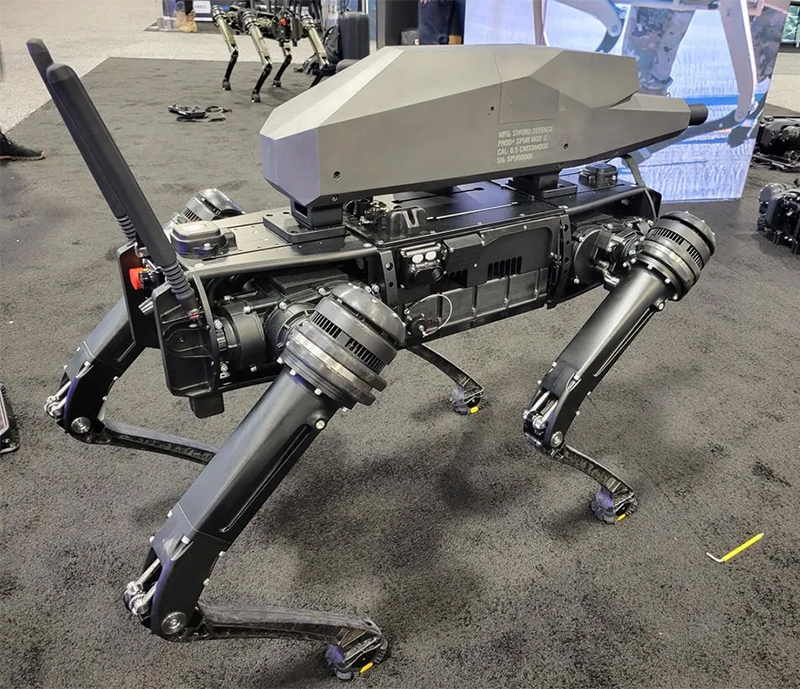
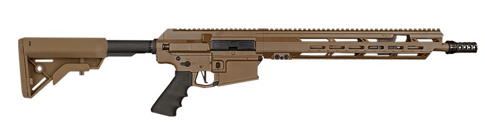
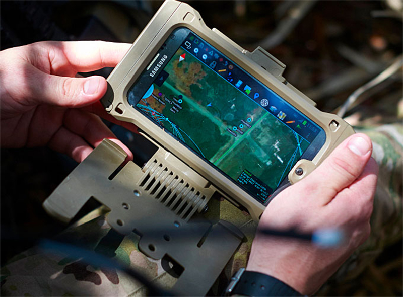

Although the story of the creation of rectangular robot dogs is a few years old, you might not expect to see them with a rifle attached to their shoulders.
But last week at the US Army's 2021 Annual Convention in Washington DC, the world got a chance to see a new robot dog strapped to a rifle for the first time.

This robot dog, which was developed by an American military equipment manufacturing company called Ghost Robotics, was equipped with an improved weapon based on the process of a 6.5mm Creedmoor type rifle manufactured by a well-known military equipment manufacturing company, Sword International.

This rifle has a camera lens with 30x optical zoom, a temperature sensor that can acquire the target even in the dark and 1It is designed to reach any target within a range of 200m.
But details such as how much ammunition the robot dog can carry at a time and how long it will take to refill after running out of ammo are still unclear.
Also, it is possible to shoot remotely through this system through the Android Team Awareness Kit (ATAK) software, just like a soldier shoots, and after installing this software on a military device such as a Tab, it is also possible to gain access to the cameras of the robot dog. has.

Also, this robot dog has the ability to recognize a certain target and lock the target through AI technology, but it does not have the ability to shoot automatically. Only man can give the command to fire.
While the purpose of creating a robot dog with this kind of capability is likely to be used in a difficult location where a soldier cannot be located, many analysts are concerned with how modern technological robots will affect the future world, as weapons of war are always things that bring destruction. Expressing concern about technology.
Further Details :- The The Verge website,
Independent website ,
Technews website, used